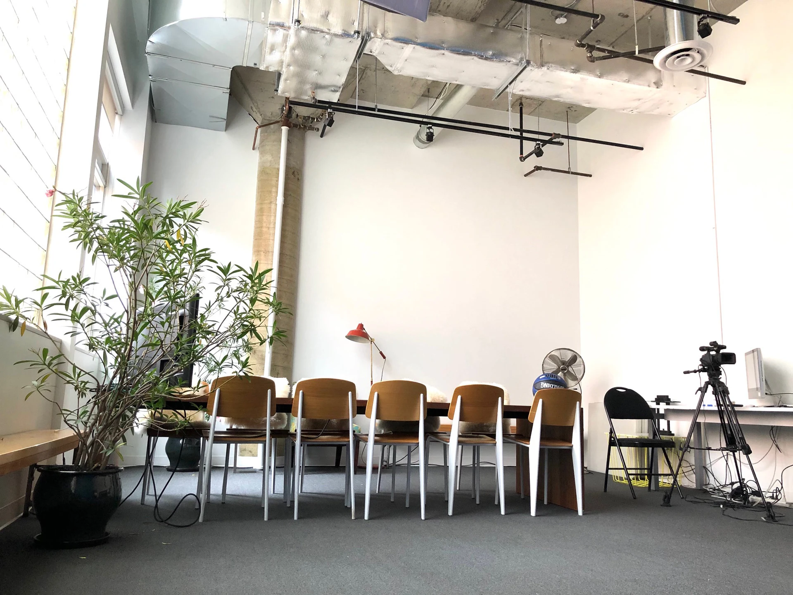
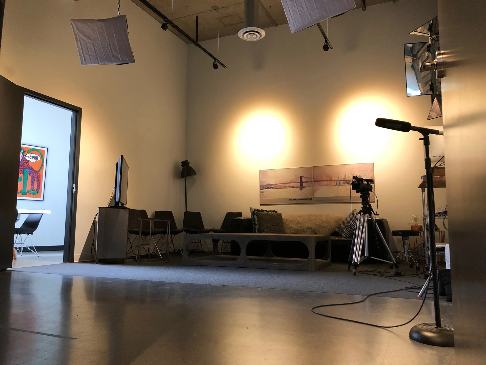

Independent proposal / photographic finishing
THE SAME SPACE.
A CLEARER LIGHT.
These comparisons use the exact same original photographs. Exposure and colour transforms are applied non-destructively for the web. No furniture, people, equipment or architecture has been generated, removed or rearranged.
STUDIO / 01

STUDIO / 02

STUDIO / 03

STUDIO / 04

The original files remain unchanged. The precise colour multipliers and gamma adjustments are documented in photo-adjustments.json. Final exports and client approval are part of the Framer production handoff.